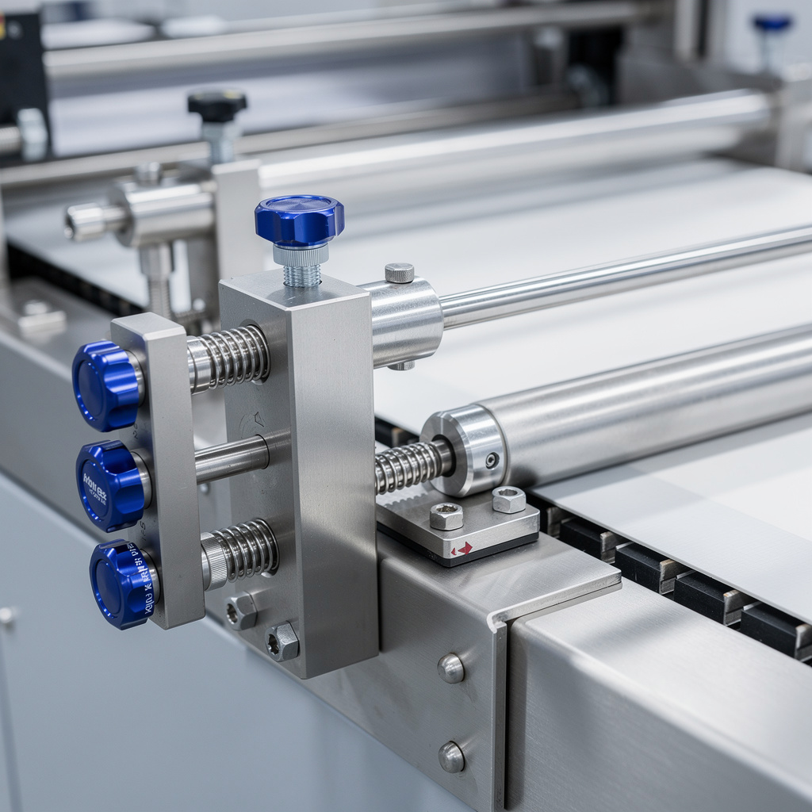

Panne récurrente encartonneuse — Ligne PET
// Le Problème
Contexte : Ligne critique approvisionnant la grande distribution. Production 22 h/jour. Tout arrêt > 20 min = risque de rupture de stock client.
Symptôme : Défaut HMI n°402 'PRODUIT_COINCÉ_ENTRÉE' toutes les 8–12 min. Accumulation de 15–18 colis rejetés/heure en sortie fardeleuse. Opérateurs forcés de redémarrer manuellement à chaque arrêt.
// Diagnostic
Électrique : alimentation capteur photoélectrique d'entrée = 24 V stable. Signal logique oscillant anormalement — diode automate clignotante au lieu de fixe.
Logiciel (TIA Portal) : dans le bloc de gestion encartonneuse, le bit de validation produit est conditionné directement par le signal capteur sans temporisation d'antirebond. L'oscillation du faisceau (condensation/buée près de la ligne froide) crée des fronts parasites interprétés comme des produits valides.
Mécanique : jeu butée d'entrée anormalement large (~3 mm vs 0,5 mm). Amortisseur hydraulique usé.
Servo : en mode manuel, le pousseur arrive 2–3 mm en retard par rapport à la consigne.


// Solution apportée
// Résultat mesuré
Temps d'arrêt moyen réduit de ~40 min à 8 min (–80 %). Taux de rejets divisé par 5 (17/h → 3/h). Zéro arrêt forcé opérateur pendant les 3 semaines suivantes. Procédure préventive appliquée sur les 3 autres lignes du site.